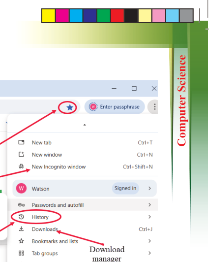
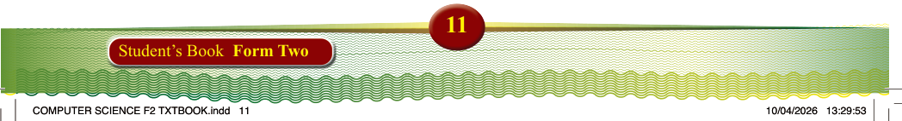
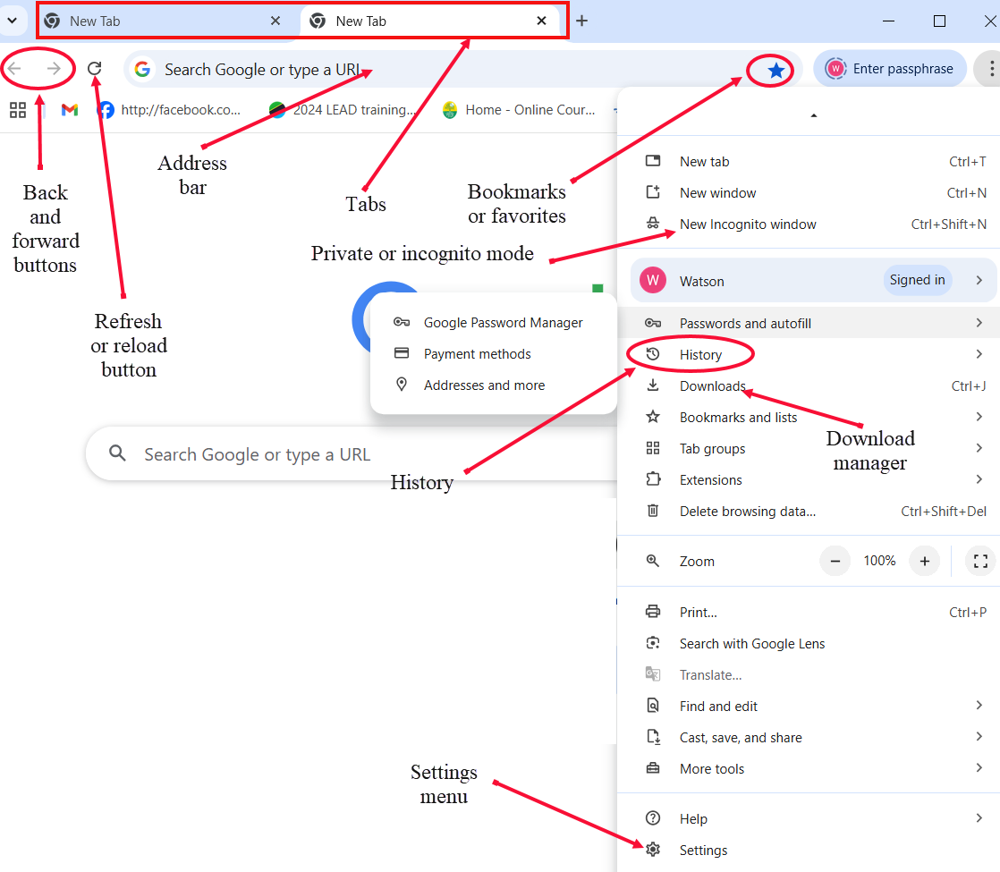
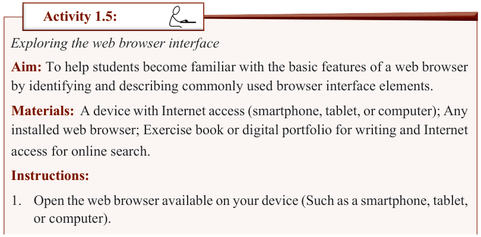

Figure 1.6: Some features of a web browser

Activity 1.5:
Exploring the web browser interface
Aim: To help students become familiar with the basic features of a web browser by identifying and describing commonly used browser interface elements.
Materials: A device with Internet access (smartphone, tablet, or computer); Any
installed web browser; Exercise book or digital portfolio for writing and Internet access for online search.
Instructions:
1. Open the web browser available on your device (Such as a smartphone, tablet, or computer).